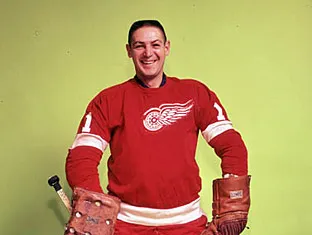
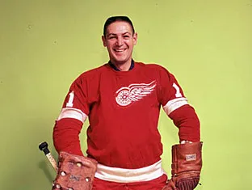
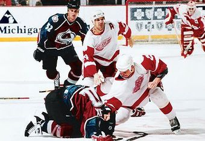
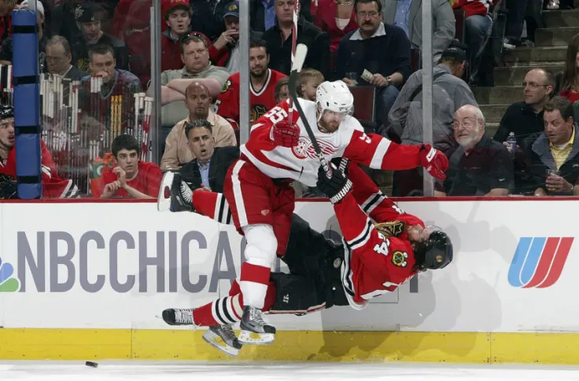
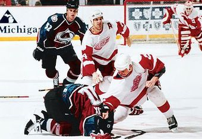
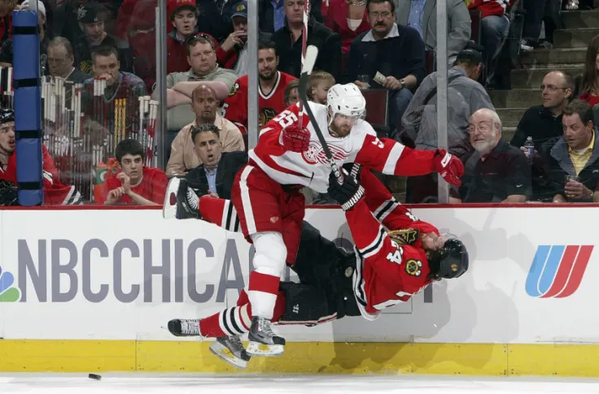

History
Foundation and Early Years (1926-1930s): The franchise was established in 1926 as the Detroit Cougars and later changed their name to the Falcons. In 1932, James E. Norris purchased the team and renamed them the Red Wings. The team experienced limited success in its early years.
Dynasty Years (1940s-1950s): The Red Wings entered a period of sustained success in the 1940s and 1950s, winning four Stanley Cup championships in six years (1950, 1952, 1954, and 1955). Legendary players such as Gordie Howe and Ted Lindsay were key contributors during this era.
Transition Period (1960s-1980s): The team faced a decline in the 1960s and 1970s, struggling to maintain the success of the previous decades. However, the 1980s saw a resurgence, with notable players like Steve Yzerman emerging as leaders.
Yzerman Era and Back-to-Back Championships (1990s): The Red Wings experienced a remarkable turnaround in the late 1980s and early 1990s. Steve Yzerman, alongside skilled players like Sergei Fedorov and Nicklas Lidström, led the team to consecutive Stanley Cup victories in 1997 and 1998 under coach Scotty Bowman.
Post-Championship Success (2000s): The Red Wings remained competitive in the 2000s, reaching the Stanley Cup Finals multiple times. They secured another championship in 2002, led by a roster that included Yzerman, Lidström, and emerging stars like Pavel Datsyuk and Henrik Zetterberg.
Transition to a New Arena (2010s): The team moved to the Little Caesars Arena in downtown Detroit in 2017, marking a new chapter in their history. During this period, the team underwent a rebuilding phase, with a focus on developing young talent.
Recent Years (2020s): The Detroit Red Wings have been working to rebuild and reestablish themselves as contenders. The team has been investing in young prospects and undergoing a rebuilding process to return to a competitive level in the NHL.
 

 


